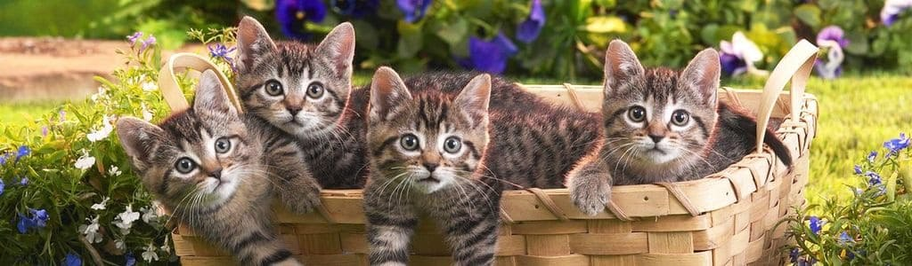
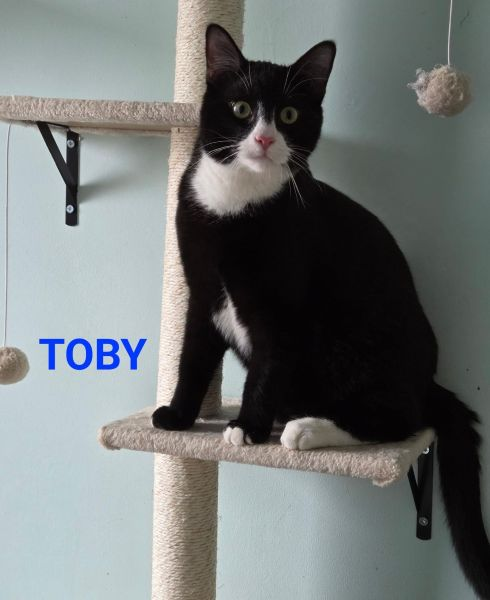
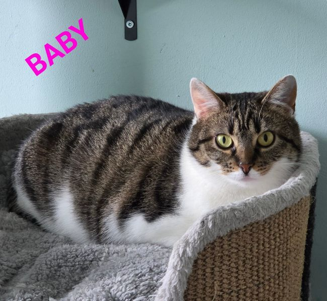
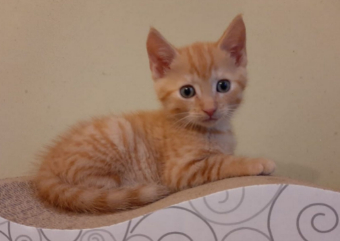
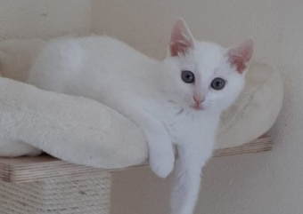
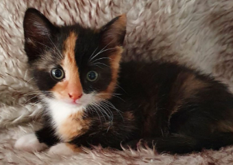
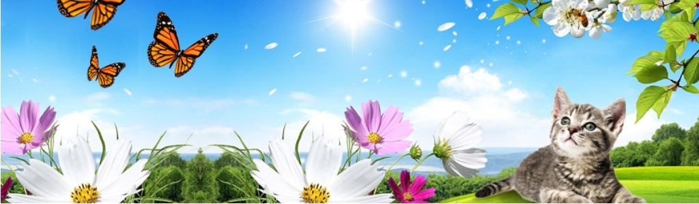
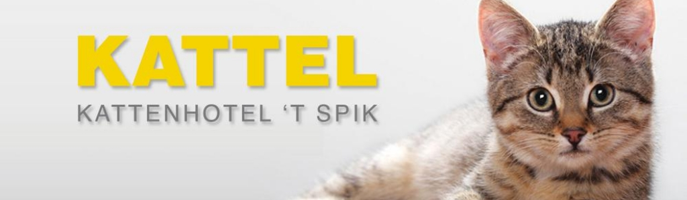

Officiële Katimo-beelden
Stichting Katimo vangt moederloze kittens, moederpoezen met kittens en zwangere katten op. Deze versie gebruikt nu weer echte beelden en actuele info van Katimo zelf.

Officiële Katimo-beelden

Toby

Baby
Al meer dan 20 jaar helpt Stichting Katimo katten die zijn gedumpt, zwerven of extra zorg nodig hebben.
De stichting draait op vrijwilligers en vangt moederloze kittens, moederpoezen met kittens en zwangere katten op tot ze veilig kunnen doorstromen naar een thuis.
Zonder subsidie, volledig afhankelijk van donaties, spullen en betrokken mensen. Dat verhaal mocht hier ook terug te zien zijn, dus de illustraties zijn vervangen door echte foto’s van Katimo zelf.



Geen stockfoto’s meer: hieronder staan echte katten van Katimo die op hun actuele pagina en Facebook-posts terugkomen.

Katimo meldt op de officiële site dat er nu geen kittens ter adoptie zijn. Voor updates verwijzen ze zelf naar hun Facebookpagina en de pagina “Baasje gezocht”.
Volwassen kat
Toby is geboren op 2 juli 2025 en wordt volgens Katimo samen geplaatst met Baby.
Bekijk Facebook-postVolwassen kat
Baby is geboren op 4 juni 2024 en staat op dezelfde actuele Katimo-post als Toby.
Bekijk Facebook-postOok dit blok gebruikt nu weer het officiële Katimo-beeld van het kattenhotel. Het hotel biedt pensionopvang als kattenpersoneel even weg moet.

De informatiekaarten verwijzen nu ook echt door naar Katimo-pagina’s in plaats van naar lege placeholders.
Wat u kunt doen als uw kat kwijt is of u een zwerfkat bent tegengekomen.
Voeding en drinkgedrag volgens de katteninfo-sectie van Katimo.
Handige uitleg voor de komst van een nieuwe kat in huis.
Alles over kattenbakinformatie, onderhoud en probleemgedrag.
Giftige planten, stoffen en EHBO-informatie op de officiële site.
De doneerknoppen sturen nu naar de werkende digitale collectebus van Stichting Katimo in plaats van naar de oude 404-link.
Open DoneerpaginaVoor vragen over adoptie, opvang, donaties of vrijwilligerswerk kunt u rechtstreeks contact opnemen met Stichting Katimo.
Doneren
Katimo ontvangt geen subsidie. Doneren kan via de digitale collectebus of rechtstreeks via hun bankrekening.
IBAN
NL69 RABO 0143653776
KvK
12056122
ANBI
Erkend goed doel